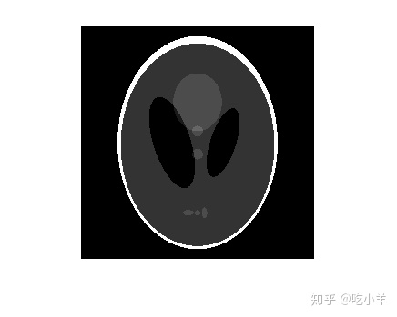
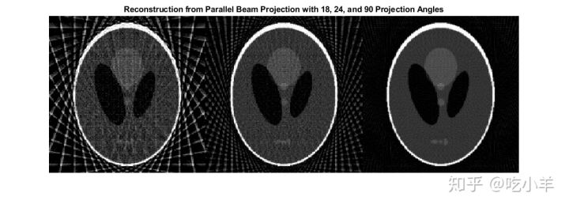
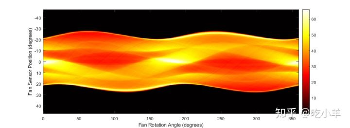
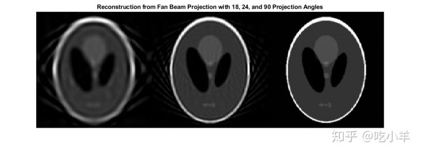

Home
此示例示出了如何使用radon，iradon，fanbeam，和ifanbeam，从样本图像建立投影，屏从投影重建图像。同时radon，iradon对投影使用平行光束几何，fanbeam并ifanbeam使用扇形光束几何。为了比较平行光束几何和扇形光束几何，以下示例为每种几何创建了合成投影，然后使用这些合成投影来重建原始图像。
需要重建图像的实际应用，是X射线吸收层析成像，其中通过测量以不同角度穿过物理样本的辐射的衰减来形成投影。原始图像可以认为是穿过样品的横截面，其中强度值代表样品的密度。通过特殊的医学成像设备收集投影，然后使用iradon或ifanbeam重建标本的内部图像。
函数iradon从平行光束投影重建图像。在平行光束几何中，每个投影都是通过以特定角度组合通过图像的一组线积分来形成的。函数ifanbeam从具有一个发射器和多个传感器的扇形束投影中重建图像。
请参阅《 Image Processing Toolbox™用户指南》以获取说明两种几何形状的图表。
创建头部影像
测试图像是可以使用函数生成的Shepp-Logan头部模型phantom。图像说明了在现实世界的人体头部层析成像中发现的许多质量。沿外部的明亮椭圆形外壳类似于头骨，内部的许多椭圆类似于脑部特征或肿瘤。
P = phantom(256); imshow(P)

平行光束-计算合成投影
使用平行光束几何计算合成投影并改变投影角度的数量。对于每个radon调用，输出都是一个矩阵，其中每一列是对应theta角度中一个角的Radon变换。
theta1 = 0:10:170; [R1,~] = radon(P,theta1); num_angles_R1 = size(R1,2) num_angles_R1 = 18 theta2 = 0:5:175; [R2,~] = radon(P,theta2); num_angles_R2 = size(R2,2) num_angles_R2 = 36 theta3 = 0:2:178; [R3,xp] = radon(P,theta3); num_angles_R3 = size(R3,2) num_angles_R3 = 90
请注意，对于每个角度，投影都是沿着xp轴的N个点计算的，其中N是一个常数，它取决于图像的对角线距离，从而每个像素都将针对所有可能的投影角进行投影。
N_R1 = size(R1,1) N_R1 = 367 N_R2 = size(R2,1) N_R2 = 367 N_R3 = size(R3,1) N_R3 = 367
因此，如果使用较小的头部幻像，则需要在沿xp轴的更少点处计算投影。
P_128 = phantom(128); [R_128,xp_128] = radon(P_128,theta1); N_128 = size(R_128,1) N_128 = 185
显示投影数据R3。原始图像的某些特征在图像R3中可见。R3第一列对应于0度的投影，该投影在垂直方向上积分。最中心的列对应于90度的投影，该投影在水平方向上积分。由于影像的最外椭圆的垂直半轴较大，因此90度的投影比0度的投影具有更宽的轮廓。
imagesc(theta3,xp,R3)
colormap(hot)
colorbar
xlabel('Parallel Rotation Angle - \theta (degrees)');
ylabel('Parallel Sensor Position - x\prime (pixels)');

平行光束-根据投影数据重建头部图像
dtheta在每次重建中，将平行旋转增量与上面用于创建相应的合成投影的相匹配。在实际情况下，您会知道发射器和传感器的几何，但不会知道源图像P。 以下三个重构（I1，I2和I3）显示了更改投影角度的数量的效果。对于I1和I2在原始图像中可见的某些功能尚不清楚。具体来说，请查看每个图像底部的三个椭圆。I3的结果与原始图像非常相似P。 请注意I1和I2中存在的重要伪影。为避免这些伪影，请使用更多角度。
% Constrain the output size of each reconstruction to be the same as the
% size of the original image, |P|.
output_size = max(size(P));
dtheta1 = theta1(2) - theta1(1);
I1 = iradon(R1,dtheta1,output_size);
dtheta2 = theta2(2) - theta2(1);
I2 = iradon(R2,dtheta2,output_size);
dtheta3 = theta3(2) - theta3(1);
I3 = iradon(R3,dtheta3,output_size);
figure
montage({I1,I2,I3},'Size',[1 3])
title('Reconstruction from Parallel Beam Projection with 18, 24, and 90 Projection Angles')

扇形光束-计算合成投影
使用扇形光束几何图形计算合成投影，并更改“ FanSensorSpacing”。
D = 250;
dsensor1 = 2;
F1 = fanbeam(P,D,'FanSensorSpacing',dsensor1);
dsensor2 = 1;
F2 = fanbeam(P,D,'FanSensorSpacing',dsensor2);
dsensor3 = 0.25;
[F3, sensor_pos3, fan_rot_angles3] = fanbeam(P,D,...
'FanSensorSpacing',dsensor3);
显示投影数据F3。请注意，扇形旋转角度的范围是0到360度，并且相同的模式以180度的偏移量出现，因为从两侧都采样了相同的特征。您可以将该扇形束投影图像中的特征与上方的平行束投影图像中的相同特征相关联。
imagesc(fan_rot_angles3, sensor_pos3, F3)
colormap(hot)
colorbar
xlabel('Fan Rotation Angle (degrees)')
ylabel('Fan Sensor Position (degrees)')

扇形光束-根据投影数据重建头部影像
将每个重构中的扇传感器间距与用于创建每个合成投影的间距相匹配。在实际情况下，您会知道发射器和传感器的几何，但不会知道源图像P。
更改“ FanSensorSpacing”的值可有效更改每个旋转角度使用的传感器数量。对于这些扇形束重构中的每一个，使用相同的旋转角度。这与分别使用不同旋转角度的平行光束重建相反。
请注意，“ FanSensorSpacing”只是您使用fanbeam和ifanbeam时可以控制的多个参数中的一个。您也可以用fan2para和para2fan函数，来回转换使用平行的和扇束投影数据。
Ifan1 = ifanbeam(F1,D,'FanSensorSpacing',dsensor1,'OutputSize',output_size);
Ifan2 = ifanbeam(F2,D,'FanSensorSpacing',dsensor2,'OutputSize',output_size);
Ifan3 = ifanbeam(F3,D,'FanSensorSpacing',dsensor3,'OutputSize',output_size);
figure
montage({Ifan1,Ifan2,Ifan3},'Size',[1 3])
title('Reconstruction from Fan Beam Projection with 18, 24, and 90 Projection Angles')

======================================================================
我的测试结果及程序
下面是我测试的代码：

注：本文根据MATLAB官网内容修改而成。